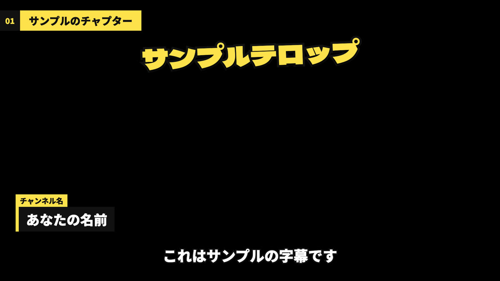

これは何？ — 編集ソフトを開かずに、完成まで
Fable 5.1 の登場で話題になった「AIにYouTube動画を丸ごと編集してもらう」やり方を、自分のPCで再現するためのマニュアルです。
ポイントは、編集ソフトをAIに操作させるのではなく、AIがコードで映像を組み立てること。テロップも名前プレートも、すべてコードで描きます。だから、指示を変えれば何度でも同じ品質で作り直せます。
編集ソフトで全部手作業
「この動画を編集して」と頼むだけ
🎬 スキルがやる7つの工程
🖼 テロップの初期デザイン
最初はこの見た目で入ります。色・フォント・大きさは、あとで自分のチャンネル風に変えられます（04）。

左上：チャプター見出し／上：強調テロップ／左下：名前プレート／下：字幕
✅ やること・やらないこと
| やること | やらないこと |
|---|---|
| カット・字幕・テロップ・名前プレート・チャプター | AIアバターの解説動画（声の合成・アニメ） |
| 手持ちの素材（写真・イラスト）を貼る | ネットの画像を勝手に拾って使う |
| 完成mp4・字幕SRT・概要欄用チャプターの書き出し | BGM・効果音の自動選曲 |
| 見た目を自分のチャンネル風に作る | YouTubeへのアップロード |
準備するもの
足りないものがあっても大丈夫です。導入の最初に Claude Code が確認して、入れ方を案内してくれます（入れる前に必ず確認を取ります）。
| 必要なもの | 目安 |
|---|---|
| Claude Code | ターミナル版・VS Code系エディタの拡張どちらでもOK |
| Node.js | 20 以上 |
| Python | 3.10 以上 |
| FFmpeg | コマンドで ffmpeg が動く状態 |
| faster-whisper | 文字起こし用。NVIDIAのGPUがあると速い |
| ネット接続 | 初回のインストールと、フォントの読み込みに使う |
導入 — プロンプトを1回貼るだけ
STEP 1 Claude Code にこのプロンプトを貼る
作業フォルダはどこでもOK。貼ったら、あとは Claude Code の質問に答えていくだけです。
STEP 2 進む流れ
📂 配布ファイル（Claude Code がダウンロードするもの）
| ファイル | 中身 |
|---|---|
| claude-code-guide.md | Claude Code が読む手順書 |
| video-editor-template.zip | Remotion の編集プロジェクトのひな形（字幕・テロップ・素材・名前プレート・チャプターの部品） |
| transcribe.py | 文字起こし（単語ごとの時刻つき） |
| make_edit.py | カット計画 → Remotion用データ・字幕・チャプター／検品用のコマ一覧 |
| SKILL_template.md | スキルの説明書のひな形（編集ルール6つ入り） |
チャンネルの見た目を作る
テロップの色・フォント・大きさは style.json という1つのファイルにまとまっています。自分で触らなくても、希望を伝えれば Claude Code が直して、静止画で見せてくれます。
🎨 変えられるもの
| 部品 | 変えられること |
|---|---|
| 字幕 | フォント・大きさ・文字色・フチ・位置／焼き込まない（YouTubeにSRTを上げる） |
| 強調テロップ | フォント・大きさ・塗り・フチの色と太さ |
| 情報テロップ | 帯の色・文字色・大きさ |
| 名前プレート／チャプター見出し | アクセント色・背景色 |
| 新しい部品 | 「実績の帯」「ランキング表」「額縁」なども、頼めばコードで追加できる |
短い動画で動作確認
いきなり本番の長い動画で使わず、1〜2分の短い動画で一度通します。手持ちの画像を1枚用意しておくと、素材貼りも一緒に確認できます。
| # | 確認すること |
|---|---|
| 1 | 文字起こしがGPUで動いた |
| 2 | 言い直しが消えて、話が自然につながっている |
| 3 | 元の動画ファイルが変わっていない |
| 4 | 字幕がセリフと合っている（後半でもズレない） |
| 5 | テロップ・名前プレート・素材が顔にかぶっていない |
| 6 | つなぎ目で音が「プツッ」と鳴らない、映像と音がズレていない |
| 7 | フォントが指定どおり |
| 8 | 概要欄用のチャプターが 0:00 から始まっている |
使い方と、スキルの育て方
✂️ ふだんの頼み方
動画の場所を渡すだけ。台本・素材フォルダ・固有名詞を添えると、仕上がりが良くなります（なくても動きます）。
🔄 1本の流れ（自分がやるのは2か所だけ）
🌱 自分好みに育てる
話しかけて直した内容は、そのままだと次の動画では元に戻ります。気に入った直し方は、最後にこう伝えてください。
📏 スキルに入っている編集ルール
| # | ルール |
|---|---|
| 1 | 発言の意味を変えない（迷ったら残す） |
| 2 | 言い直しは後のテイクを採用 |
| 3 | 固有名詞・数字は台本に合わせて統一 |
| 4 | テロップは強調したい一言だけ。同時に1つまで |
| 5 | 顔や大事な画面にテロップ・素材を重ねない |
| 6 | 派手さは最後。まず見やすさ |
ルールも「テロップはもっと多めに」などで変えられます。
困ったとき
基本は、症状をそのまま Claude Code に伝えれば、手順書を見て直してくれます。よくあるものだけ載せています。
書き出しがなかなか始まらない／遅い
書き出しの前に、元動画を作業用にコピーする時間がかかります（動画が大きいほど長い）。故障ではありません。遅いと感じたら「書き出しを速くする設定を試して」と伝えてください。PCに合った同時処理の数を探してくれます。
フォントが四角になる／違うフォントになる
フォント名が Google Fonts の名前と合っていないか、ネットにつながっていません。「フォントが違う」と伝えれば直します。
映像と音がだんだんズレる
スマホで撮った動画に多い症状です。症状を伝えると、元動画を残したまま、ズレにくい形式に変換したコピーを作ってから編集し直します。
言葉の頭や語尾が切れる／間が詰まりすぎ・残りすぎ
「言葉の前後をもう少し残して」「間は0.3秒くらい残して」のように伝えてください。気に入ったら「スキルに反映して」で次回からも同じになります。
テロップが顔にかぶる
検品で見つけたら自動で位置を変えますが、見落としがあれば「1分20秒のテロップが顔にかぶってる」と伝えてください。いつも同じ位置でかぶるなら、見た目の設定ごと直してもらいます。
使わなくなったので消したい
Claude Code に「動画編集スキルと編集プロジェクトをアンインストールして」と伝えてください。スキルのフォルダと編集プロジェクトのフォルダを、確認を取りながら消します。作った動画は残ります。